Elaboration about Generic Page

It was during our college fest I heard a pianist play River flows by Yiruma for the first time and I was hooked. I borrowed a piano from a friend and started with YouTube tutorials. I followed them faithfully. But it was hard for me to play with both my hands simultaneously. Even a ton of hand coordination videos couldn’t help me get it right. I went to online forums to check out the FAQ’s but I felt that my petty doubts had no place there How long does it take on an average to play chords with my left and melody with my right? Why can’t I do it? God I’m gonna break this.😫 The answer obviously is it depends. But I started losing interest and so I went to my friend to return his piano that’s when he gave me a tip on coordination. I gave it a shot and it worked. That’s the thing with self learning if you’re stuck in between and you couldn’t get your query sorted you tend to lose interest. So I took upon this challenge to improve this experience for the students. So that they stay motivated throughout and have fun while learning.
Research
To know more about this journey and to define the exact problem faced by the students I floated a google form in my college network which was filled by 94 students.
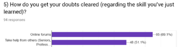
Among the people taking help from the online forums around 77% students say that they have to search a lot for trivial things. Also a lot of students don’t mind solving a few doubts and helping their peers.
Problem Statement
Students tend to lose interest in the skill they’ve started learning online.
Ideatation
This is my favorite part😍! I started brainstorming as to how this experience can be made more engaging and fun.
So I started listing down the things my solution would revolve around.
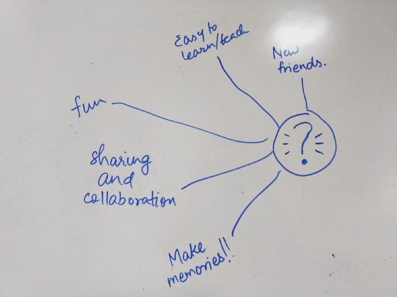
Always foster sharing and collaboration- Two very powerful mechanisms to generate personal fulfillment and to create strong connections. When people do something fun together, they release oxytocin, and as a result they connect at a chemical level.
Help people make memories- We barely remember project details or work related items. But we certainly remember the fun and exciting moments. The solution should always promote the creation of learning experiences, that is, Memories.
Solution
We already have few clubs which promote arts and technical skills. So I thought of making hobby groups amongst them to tackle this problem but this would lead to more hassle. Hobby groups would be a better option if there are more people interested in that particular skill. For a small set of people interested in a skill, This won’t be that efficient.
As the target audience is students staying on-campus. I preferred a mobile app over website because it is more engaging and helps in making the connect more easier and quicker.
So, the solution narrowed down to create a mobile platform to promote peer-to-peer learning.
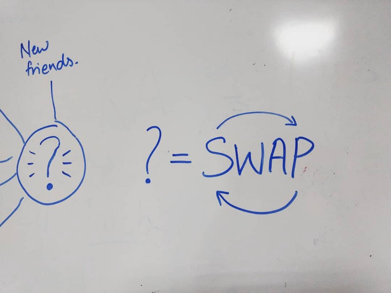
user journey
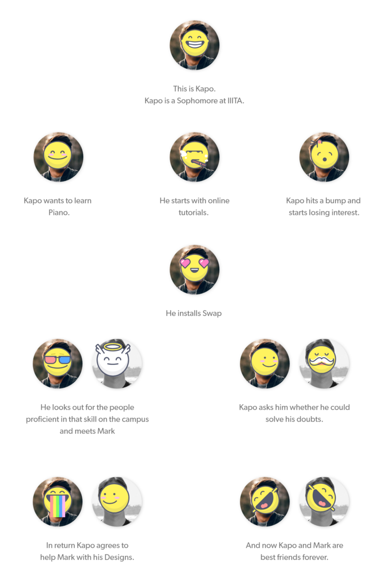
There are two primary use cases:
1. To get help in learning a new skill
2. To teach a skill
I started sketching my ideas and thinking of ways in which the app would progress. I took inspiration from InstaEdu and Chegg although these platforms were way different from what i was planning but they helped me in planning out the directions in which the app should move ahead.
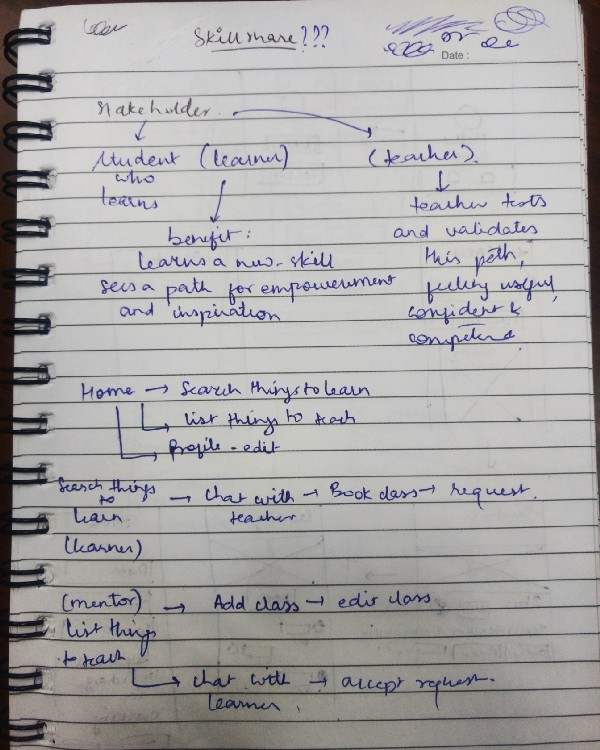
Once Iwas satisfied with the flow I started sketching wire frames on the paper to translate this flow into screens.
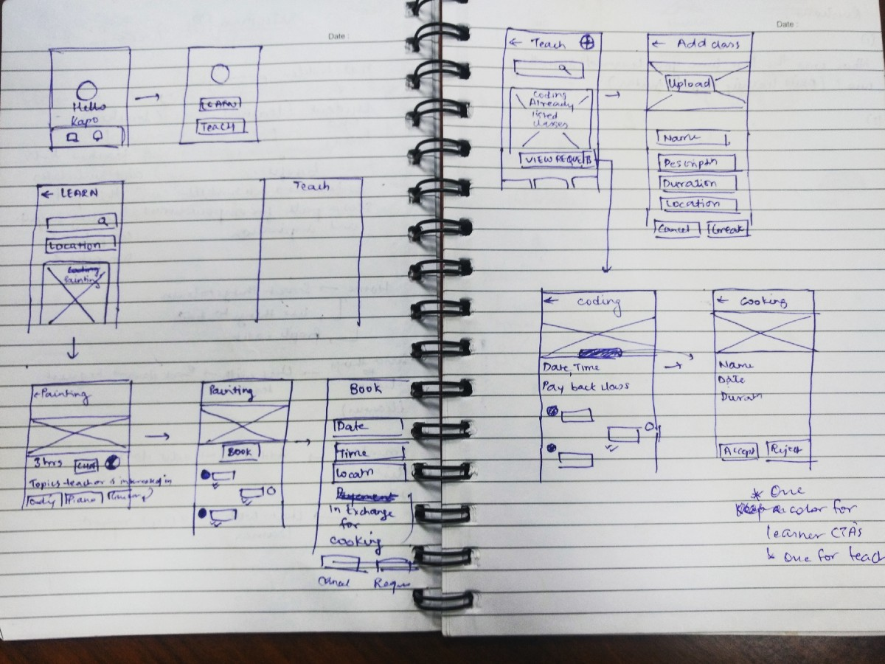
The next stage was to design screens. So i dived into Xd.
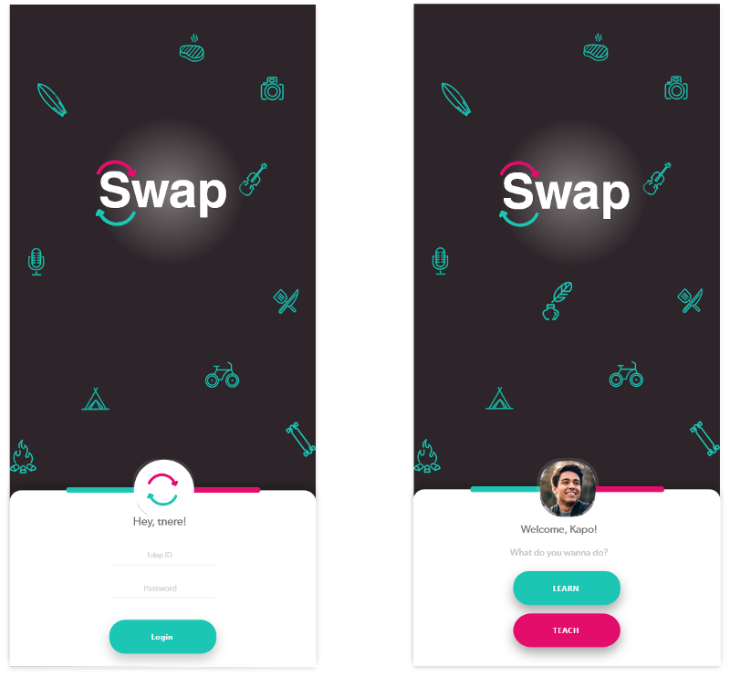
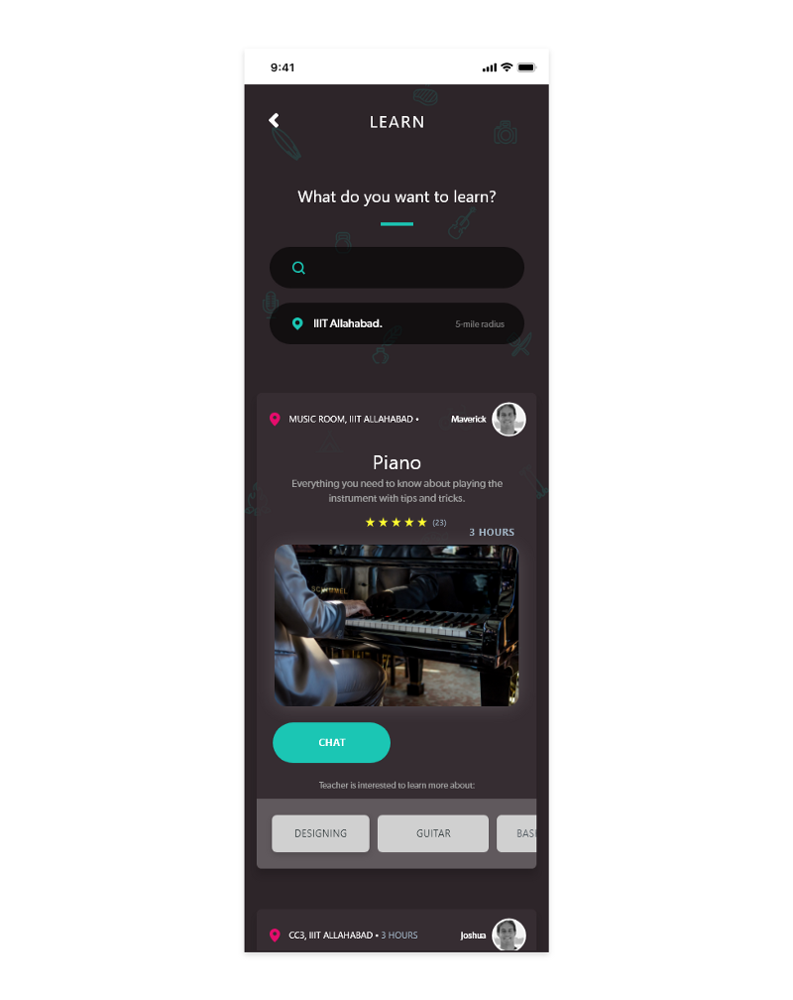
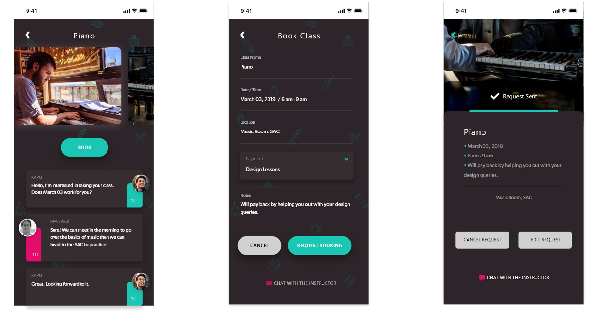
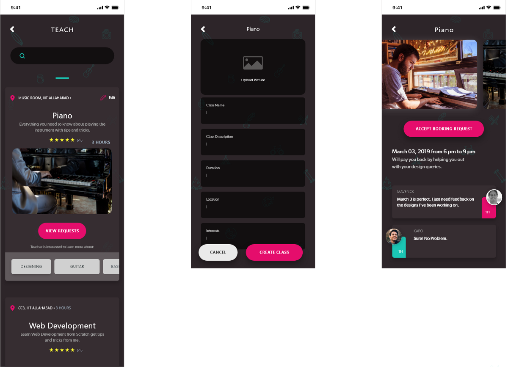
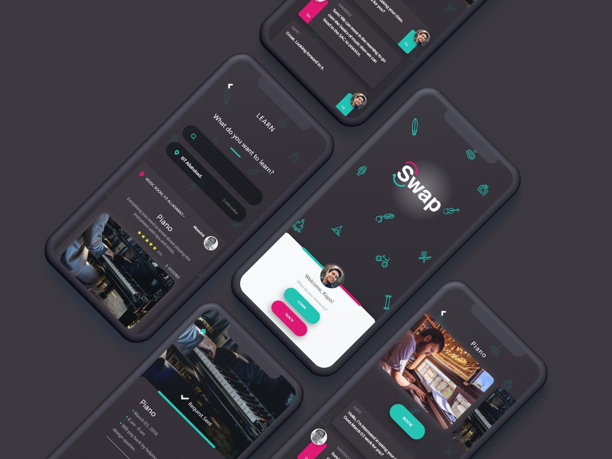
Thanks for the read😊 You can get in touch with me at vinitmankar@gmail.com or follow me on behance. Constructive feedback appreciated!